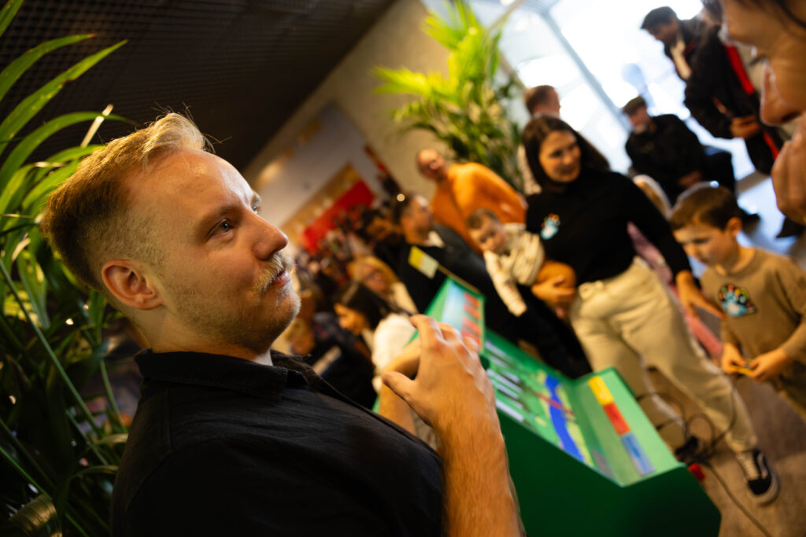

MAKERDAYS Eindhoven 2025
Afgelopen jaar lieten we ons weer horen bij de ingang van het stadhuis. We waren weer aanwezig bij de MAKERDAYS Eindhoven, inmiddels bijna traditie voor ons.

Het blijft een van die evenementen waar we met plezier naartoe werken. Het mooie aan de MAKERDAYS Eindhoven is dat het publiek altijd nieuwsgierig, open en betrokken is. Dat maakt het voor ons een fijne plek om onze interactieve installaties te tonen, testen en te blijven ontwikkelen.
We waren aanwezig met de SideQuest Rave en de arcademachine. Die laatste hebben we het afgelopen jaar verder verfijnd. Wat ons raakte: er waren kinderen die hun avatar van vorig jaar hadden meegenomen, zodat ze dit jaar opnieuw mee konden spelen. Dat gevoel van herkenning en continuïteit laat precies zien waarom we graag bij de MAKERDAYS Eindhoven aansluiten.
De MAKERDAYS geeft ons ieder jaar opnieuw de kans om ideeën te testen, gesprekken te voeren en te zien wat onze installaties in beweging brengt. Zolang we worden uitgenodigd, blijven we graag een vaste waarde op deze plek. Tot volgend jaar?